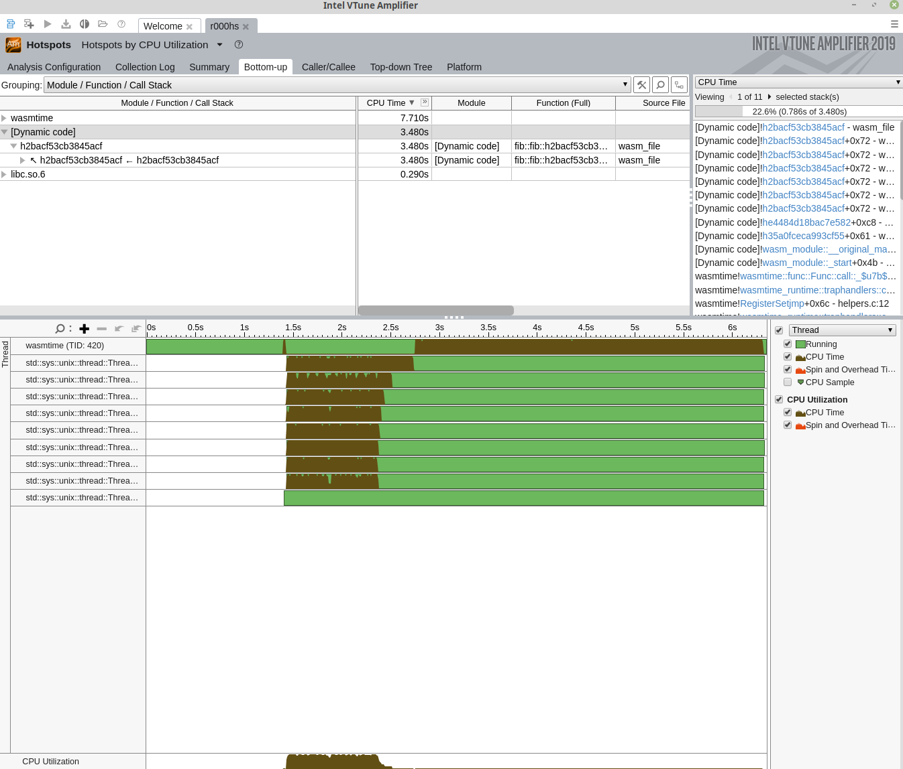

Using VTune
VTune is a popular performance profiling tool that targets both 32-bit and 64-bit x86 architectures. The tool collects profiling data during runtime and then, either through the command line or GUI, provides a variety of options for viewing and analyzing that data. VTune Profiler is available in both commerical and free options. The free, downloadable version is available here and is backed by a community forum for support. This version is appropriate for detailed analysis of your Wasm program.
VTune support in Wasmtime is provided through the JIT profiling APIs from the
ittapi library. This library provides code generators (or the runtimes that
use them) a way to report JIT activities. The APIs are implemented in a static
library (see ittapi source) which Wasmtime links to when VTune support is
specified through the vtune Cargo feature flag; this feature is not enabled by
default. When the VTune collector is run, the ittapi library collects
Wasmtime's reported JIT activities. This connection to ittapi is provided by
the ittapi-rs crate.
For more information on VTune and the analysis tools it provides see its documentation.
Turn on VTune support
For JIT profiling with VTune, Wasmtime currently builds with the vtune feature
enabled by default. This ensures the compiled binary understands how to inform
the ittapi library of JIT events. But it must still be enabled at
runtime--enable runtime support based on how you use Wasmtime:
-
Rust API - call the [
Config::profiler] method withProfilingStrategy::VTuneto enable profiling of your wasm modules. -
C API - call the
wasmtime_config_profiler_setAPI with aWASMTIME_PROFILING_STRATEGY_VTUNEvalue. -
Command Line - pass the
--vtuneflag on the command line.
Profiling Wasmtime itself
Note that VTune is capable of profiling a single process or all system
processes. Like perf, VTune is capable of profiling the Wasmtime runtime
itself without any added support. However, the ittapi APIs also provide an
interface for marking the start and stop of code regions for easy isolation in
the VTune Profiler. Support for these APIs is expected to be added in the
future.
Example: Getting Started
With VTune properly installed, if you are using the CLI execute:
$ cargo build
$ vtune -run-pass-thru=--no-altstack -collect hotspots target/debug/wasmtime --vtune foo.wasm
This command tells the VTune collector (vtune) to collect hot spot
profiling data as Wasmtime is executing foo.wasm. The --vtune flag enables
VTune support in Wasmtime so that the collector is also alerted to JIT events
that take place during runtime. The first time this is run, the result of the
command is a results diretory r000hs/ which contains profiling data for
Wasmtime and the execution of foo.wasm. This data can then be read and
displayed via the command line or via the VTune GUI by importing the result.
Example: CLI Collection
Using a familiar algorithm, we'll start with the following Rust code:
fn main() { let n = 45; println!("fib({}) = {}", n, fib(n)); } fn fib(n: u32) -> u32 { if n <= 2 { 1 } else { fib(n - 1) + fib(n - 2) } }
We compile the example to Wasm:
$ rustc --target wasm32-wasi fib.rs -C opt-level=z -C lto=yes
Then we execute the Wasmtime runtime (built with the vtune feature and
executed with the --vtune flag to enable reporting) inside the VTune CLI
application, vtune, which must already be installed and available on the
path. To collect hot spot profiling information, we execute:
$ rustc --target wasm32-wasi fib.rs -C opt-level=z -C lto=yes
$ vtune -run-pass-thru=--no-altstack -v -collect hotspots target/debug/wasmtime --vtune fib.wasm
fib(45) = 1134903170
amplxe: Collection stopped.
amplxe: Using result path /home/jlb6740/wasmtime/r000hs
amplxe: Executing actions 7 % Clearing the database
amplxe: The database has been cleared, elapsed time is 0.239 seconds.
amplxe: Executing actions 14 % Updating precomputed scalar metrics
amplxe: Raw data has been loaded to the database, elapsed time is 0.792 seconds.
amplxe: Executing actions 19 % Processing profile metrics and debug information
...
Top Hotspots
Function Module CPU Time
-------------------------------------------------------------------------------------------- -------------- --------
h2bacf53cb3845acf [Dynamic code] 3.480s
__memmove_avx_unaligned_erms libc.so.6 0.222s
cranelift_codegen::ir::instructions::InstructionData::opcode::hee6f5b6a72fc684e wasmtime 0.122s
core::ptr::slice_from_raw_parts::hc5cb6f1b39a0e7a1 wasmtime 0.066s
_$LT$usize$u20$as$u20$core..slice..SliceIndex$LT$$u5b$T$u5d$$GT$$GT$::get::h70c7f142eeeee8bd wasmtime 0.066s
Example: Importing Results into GUI
Results directories created by the vtune CLI can be imported in the VTune GUI
by clicking "Open > Result". Below is a visualization of the collected data as
seen in VTune's GUI:

Example: GUI Collection
VTune can collect data in multiple ways (see vtune CLI discussion above);
another way is to use the VTune GUI directly. A standard work flow might look
like:
- Open VTune Profiler
- "Configure Analysis" with
- "Application" set to
/path/to/wasmtime(e.g.,target/debug/wasmtime) - "Application parameters" set to
--vtune /path/to/module.wasm - "Working directory" set as appropriate
- Enable "Hardware Event-Based Sampling," which may require some system
configuration, e.g.
sysctl -w kernel.perf_event_paranoid=0
- "Application" set to
- Start the analysis